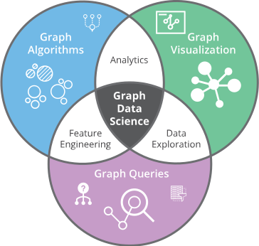

1. Introduction
In this concluding chapter, we will discuss different ways in which
the knowledge graphs intersect with Artificial Intelligence (AI). As
we noted in the opening chapter, use of labeled directed graphs for
knowledge representation has been around since the early days of
AI. Our focus for discussion in this chapter is on the use of
knowledge graphs in the recent developments. Consequently, we have
chosen three themes for further elaboration: knowledge graphs as a
test bed for AI algorithms, emerging new specialty area of graph data
science, and knowledge graphs in the broader context of achieving the
ultimate vision of AI.
2. Knowledge Graphs as a Test-Bed for Current Generation AI Algorithms
Knowledge graphs have a two way relationship with AI algorithms. On one hand, knowledge graphs enable many of
the current AI applications, and on the other, many of the current AI
algorithms are used in creating the knowledge graphs. We will consider this
symbiotic synergy in both directions.
Personal assistants, recommender systems, and search engines are
applications that exhibit intelligent behavior and have billions of
users. It is now widely accepted that these applications behave better
if they can leverage knoweldge graphs. A personal assistant using a
knowledge graph can get more things done. A recommender system with a
knowledge graph can make better recommendations. Similarly, a search
engine can return better results when it has access to a knowledge
graph. Thus, these applications provide a compelling context and a set
of requirements for knowledge graphs to have an impact on
immediate product offerings.
To create a knowledge graph, we must absorb knowledge from multiple
information sources, align that information, distill key pieces of
knowledge from the sea of information, and mine that knowledge to
extract the wisdom that would influence the intelligent behavior. The
AI techniques play an important role at each step of knowledge
graph creation and exploitation. For extracting information from
sources, we considered entity and relation extraction techniques. For
aligning information across multiple sources, we used techniques such
as schema mapping and entity linking. To distill the extracted
information, we can use techniques such as data cleaning and anamaly
detection. Finally, to extract the wisdom from the graph we used
inference algorithms, natural language question answering, etc.
Hence, knowledge graphs enable AI systems, which provide motivation
and a set of requirements for them. AI techniques are also fueling
our ability to create the knowledge graph economically and at
scale.
3. Knowledge Graphs and Graph Data Science
Graph data science is an emerging discipline that aims to derive
knowledge by leveraging structure in the data. Organizations typically
have access to huge amount of data, but their ability to leverage this
data has been limited by a collection of preset reports that are
generated using that data. The discipline of graph data science is
transforming that experience by combining graph algorithms, graph
queries and visualizations into products that significantly speedup
the process of gaining insights.

As we saw in the analytics-oriented use cases for financial
industry, businesses are keen to exploit the relational structure in
their data to make predictions about risk, new market opportunities,
etc. For making predictions, it is common to use machine learning
algorithms that rely on careful feature engineering. As machine learning
algorithms are now becoming a commodity and can be used as off-the-shelf
products, there is emerging a distinct skill of feature engineering.
Feature engineering requires a deep understanding of the domain as well as
understanding of the workings of machine learning algorithms.
It is this synergy among the traditional graph-based system and the
availability of machine learning to identify and predict relational
properties in data, that has catalyzed the creation of the
sub-discipline of graph data science. Because of the high impact
use cases possible through graph data science, it is becoming an
increasingly sought after software skill in the industry today.
4. Knowledge Graphs and Longer-Term Objectives of AI
Early work in AI focused on explicit representation of knowledge
and initiated the field of knowledge graphs through representations
such as semantic networks. As the field evolved, semantic networks
were formalized, and led to several generations of representation
languages such as description logics, logic programs, and graphical
models. Along with the development of these languages, an equally
important challenge of authoring the knowledge in the chosen formalism
was addressed. The techniques for authoring knowledge have
ranged from knowledge engineering, inductive learning, and more
recently deep learning methods.
To realize the vision of AI, an explicit knowledge representation
of a domain that matches human understanding and enables reasoning
with it is essential. While in some performance tasks such as search,
recommendation, translation, etc., human understanding and precision
are not hard requirements, but there are numerous domains where these
requirements are essential. Examples of such domains include
knowledge of law for income tax calculations, knowledge of a
subject domain for teaching it to a student, knowledge of a contract
so that a computer can automatically execute it, etc. Furthermore, it
is being increasingly recognized that for many situations where we can
achieve intelligent behavior without explicit knowledge
representation, the behavior still needs to be explainable so that
humans can understand the rationale for it. For this reason, we
believe, that an explicit representation is essential.
There is narrative in the research community that knowledge
engineering does not scale, and that the natural language processing,
and machine learning methods scale. Such claims are based on an incorrect
characterization of the tasks addressed by natural language
processing. For example, using language models, one may be able to
calculate word similarity, but the language model gives us no
information on the reason for that similarity. In contrast, when we
use a resource such as Wordnet for calculating word similarity, we
know exactly the basis for that similarity. A language model might
have achieved scale, but at the cost of human understandability of its
conclusions. The success of web-scale methods is crucially dependent
on the human input in the form of hyperlinks, click data, or explicit
user feedback. Leveraging these scalable and automated methods to
create human understandable knowledge graphs, and using them to
achieve intelligent behavior truly addresses how an AI system should
function.
It is well-known that a simple labeled graph representation is
insufficient for many of the performance tasks desired from AI. That
was precisely the reason for developing more expressive
representation formalisms. Due to a need to address the economics
and the scale of creating such representation, expressive formalisms
are less commonly used, but it does not imply that the problems such
formalisms address have been solved by the newer deep learning and
NLP methods. Some examples of such problems include self-awareness,
commonsense reasoning, model-based reasoning, experimental design,
etc. A self-aware system can recognize and express the
limits of its own knowledge. Commonsense understanding of the world
gives a system ability to recognize obviously nonsensical
situations, e.g., a coin that has a date stamp of 1800 B.C., could
not be a real coin. Current language models can generate sentences
that make sense only up to a certain length, but they lack an
overall model of the narrative to generate longer coherent
texts. Creating AI programs that can master a domain, formulate a
hypothesis, design an experiment, and analyze its results is a
challenge that is out of reach of any of the current generation
systems.
5. Summary
We considered three different ways the work on knowledge graphs
intersect with AI: as a test-bed for evaluating machine learning and
NLP algorithms, as an enabler of the emerging discipline of graph
data science, and as a core ingredient to realizing the long-term
vision of AI. We hope that this volume will inspire many to
leverage what is possible through the scalable creation of knowledge
graphs and their exploitation. And yet, we should not let go a
longer-term vision of creating expressive, and human understandable
representations that can also be created scalably.
|
 CS520
CS520